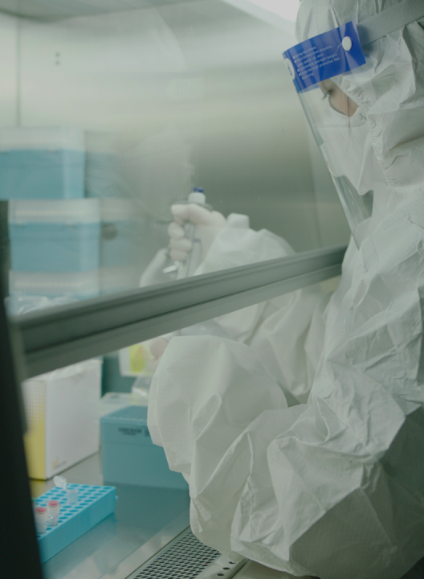

진단검사의학과

진단검사의학과는 환자의 정확한 진단을 위해 혈액, 소변, 체액 등 인체에서 유래하는 각종 검체를 분석하고 판독하여 질병의 진단 및 감별, 중등도 및 경과를 파악하고 치료 방향 결정과 예후 판정에 매우 중요한 역할을 담당하고 있습니다.
삼광의료재단은 최첨단 자동화 시스템과 분석 장비를 기반으로 신속하고 정확하게 결과를 보고하여 드리며, 각 분야별 전문의가 결과를 판독하고 임상 자문 및 학술 연구를 통해 전문적인 검사 정보를 제공하여 진료에 도움을 드리고 있습니다.
-
전국 47 개 영업지점망을
통한 검체 운송 시스템 및 전용
데이터베이스 구축 -

최고 수준의 장비 및 시설을
갖춘 임상검체분석
전용 검사실 운영 -
임상 연구 설계 및 진행에 대한
분석 기술 -
체계적 보관 및 관리시스템을
통한 고품질의 다양한 인체
유래물 자원 보유 -

고객 중심의 맞춤형 연구지원
서비스